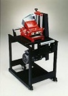

WORK EXPERIENCE
Monroe Staffing @ Symetry Medical
Swiss Machinist & Set-Up Programmer
Manchester
04/2016-08/2016
- Ran their Citizens A20.
- Haas
- RoboTeks
Millenium Percision
Junior Programmer
Manchester NH
08/2015-03/2016
- Used advance Q.C. equipment for inspections. i.e. 4600 series 14" vertical beam Measured and marked dimensions and reference points accurately. Measured instruments to verify compliance with precise specifications.
- Dismantled and inspected components and adjusted and repaired them as necessary. Trained, directed and instructed apprentices and helpers. Fabricated tools, jigs and fixtures to meet manufacturing and engineering needs. Measured, marked and indicated proper dimensions and reference points on materials and work pieces for future reference. Calculated and set controls to regulate machining factors like part speed, feed, coolant flow, depth, angle of cut and clamping methods.
- Machined small and large parts to tolerances of .00015 or less. Made appropriate offset corrections for tool wear, broken tools and casting variations.Selected appropriate speeds and feeds according to type of metal and finish specifications. Executed bench, machine and hand tool work in shaping, fitting, and assembling machine parts from metal stock. Maintained logs, lists and files and promptly completed all necessary paperwork. Im actually in the process of finalizing a quality process that can be universally used in machine shops around the world.

Williams & Hussey
CNC Department
Milfod NH
9/2014-07/2015
- Was hired to be cnc setting up manual lathes and 2 Trump machines soon became Painter, Grinder, Assembler QA inspection on the spot Used over Head cranes with HEAVY LOADS safely Mount install, align, and secure tools, attachments, fixture I was aware going into this situation that i would have to wear many hats. Maintained logs, lists and files and promptly completed all necessary paperwork.
C&M Machine Products
CNC Machinist
Hudson NH
05/2007-12/2013
- C&M machining Hudson, NH
Made appropriate offset corrections for tool wear,broken tools and casting variations. Gauged and maintained tolerances on grinding diameters, depths, squareness and parallelism. Operated hand tools, drill presses, riveting machines and tap burners.Executed bench, machine and hand tool work in shaping, fitting, and assembling machine parts from metal stock. Maintained logs, lists and files and promptly completed all necessary paperwork. Machined small and large parts to tolerances of .0001 or less. Measured instruments to verify compliance with precise specifications.
SKILLS
- Quality Inspection:commercial, defense, medical & food grade,computerized charting,educator
- People skills: great bedside manner,enthusiastic people person,advanced problem-solving, great organizational skills
- Programming: Able to modify programs and Troubleshoot